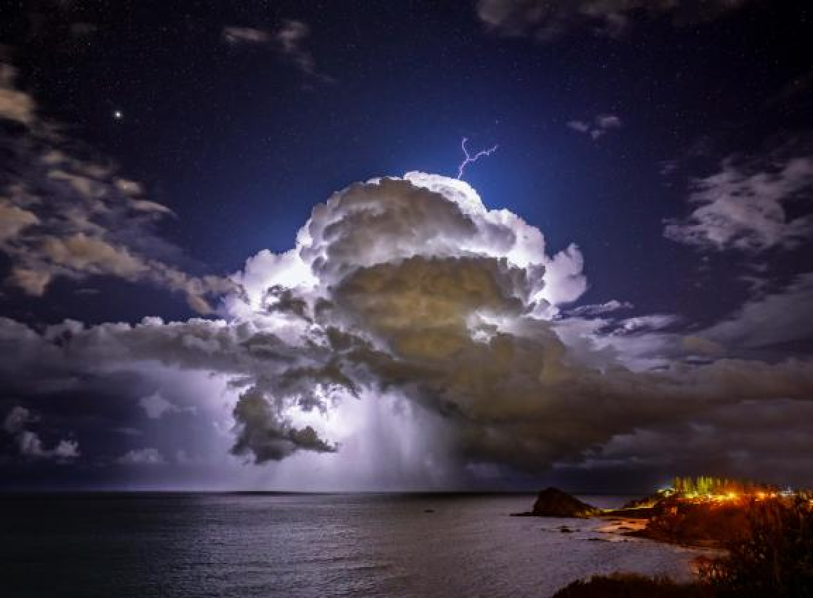
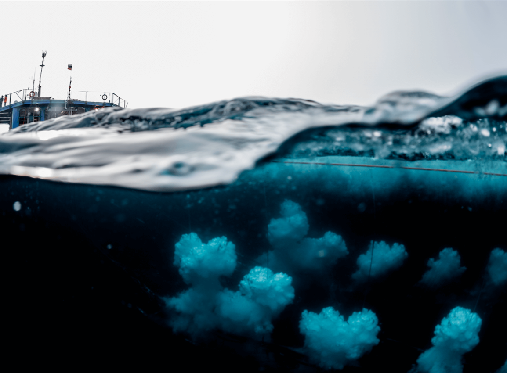
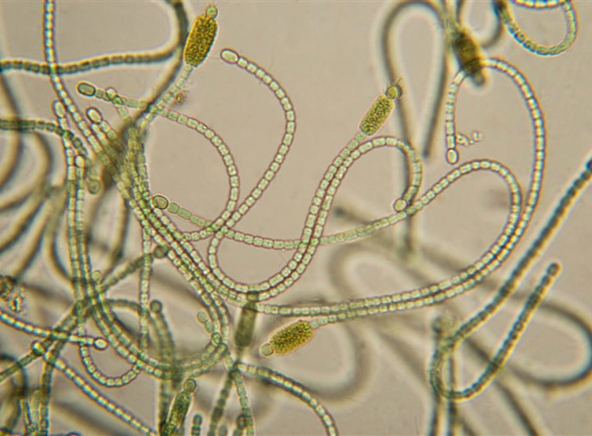
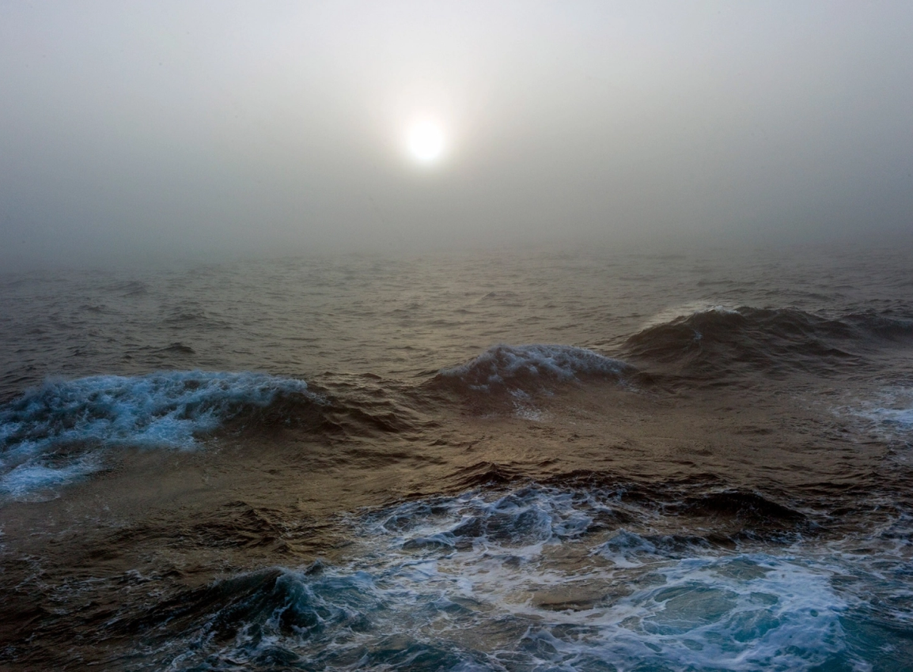
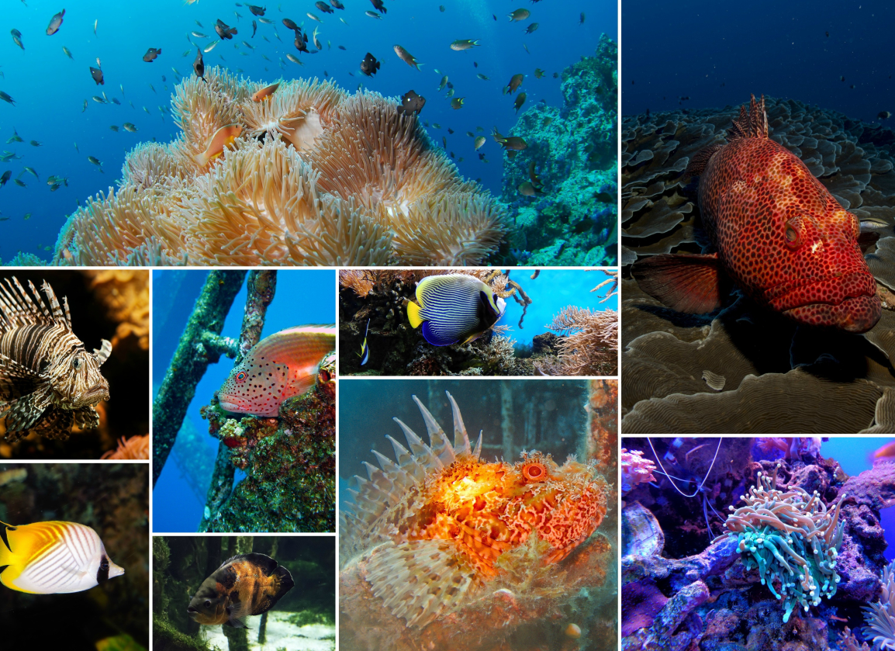

Regulación del clima:
El océano absorbe grandes cantidades de calor del sol y actúa como un regulador del clima al redistribuir ese calor a través de corrientes oceánicas.
Esto ayuda a mantener las temperaturas en la Tierra en un rango habitable.


Almacenamiento de dióxido de carbono:
El océano es un sumidero de carbono, absorbiendo aproximadamente una cuarta parte del dióxido de carbono (CO2) producido por la actividad humana. Esto ayuda a mitigar el calentamiento global al reducir la cantidad de CO2 en la atmósfera.
Producción de oxígeno:
Los organismos marinos, como las algas y los fitoplancton, realizan la fotosíntesis y producen oxígeno.
Se estima que el océano produce alrededor del 70% del oxígeno que respiramos.


Influencia en el clima regional:
Las corrientes oceánicas transportan calor y nutrientes, lo que influye en el clima regional.
Por ejemplo, la corriente del Golfo en el Atlántico Norte ayuda a mantener el clima relativamente cálido en Europa occidental.
Hábitat para la biodiversidad:
El océano alberga una gran diversidad de vida marina, incluyendo especies fundamentales para los ecosistemas marinos.
Estos organismos juegan un papel importante en el equilibrio de los ecosistemas y la salud del océano.

En resumen, el océano desempeña un papel vital en el equilibrio climático global al regular el clima, almacenar dióxido de carbono, producir oxígeno, influir en el clima regional y proporcionar hábitat para la biodiversidad marina. Es fundamental para la salud del planeta y su capacidad para mantener la vida.